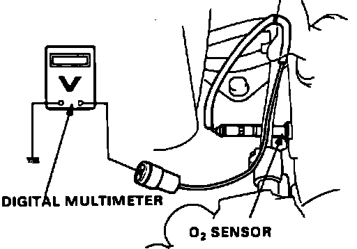

DTC 2
Code 2 indicates a problem in the rear oxygen sensor circuit. Before diagnosing code 2, verify proper fuel pressure regulator operation. Refer to FUEL SYSTEMS for additional information.1. Remove Alternator Sense fuse in underhood relay box for 10 seconds to reset ECU.
2. Start engine and run until cooling fan comes on.
3. Without allowing the throttle to completely close, hold engine speed at 1700 rpm for 15 minutes.
4. Observe diagnostic LED.
Code 1, proceed to step 6.
No code 1, proceed next step.
5. Problem is intermittent check for loose wires at oxygen sensor and ECU. End of test.
Oxygen Sensor Testing:

6. With ignition off disconnect oxygen sensor and connect voltmeter as shown.
7. Start engine and run until cooling fan comes on.
8. Raise engine speed to 5000 rpm and then release while observing voltmeter.
Voltage should be above 0.6 volts at 5000 rpm and below 0.4 volts during closed throttle deceleration.
9. If either voltage is incorrect, replace oxygen sensor. If voltage is correct, continue with next step.
10. With ignition off, reconnect oxygen sensor.
11. Install test harness between ECU and connector. If test harness is not available, carefully backprobe wires at ECU connector.
12. Restart engine and run until cooling fan comes on.
Oxygen Sensor Testing:
13. Connect voltmeter between ECU terminals C10 and A18.
14. Raise engine speed to 5000 rpm and then release while observing voltmeter.
Voltage should be above 0.6 volts at 5000 rpm and below 0.4 volts during closed throttle deceleration.
15. If voltage was incorrect, repair RED/BLU wire between ECU terminal C10 and oxygen sensor. If voltage was correct, replace electronic control unit.